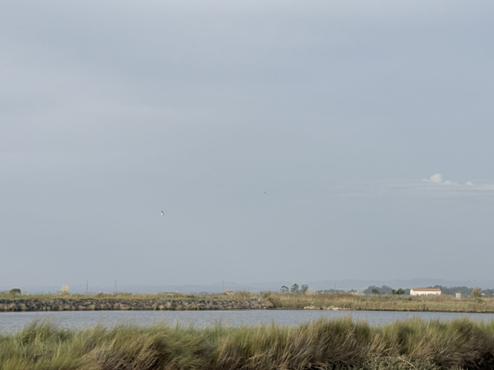
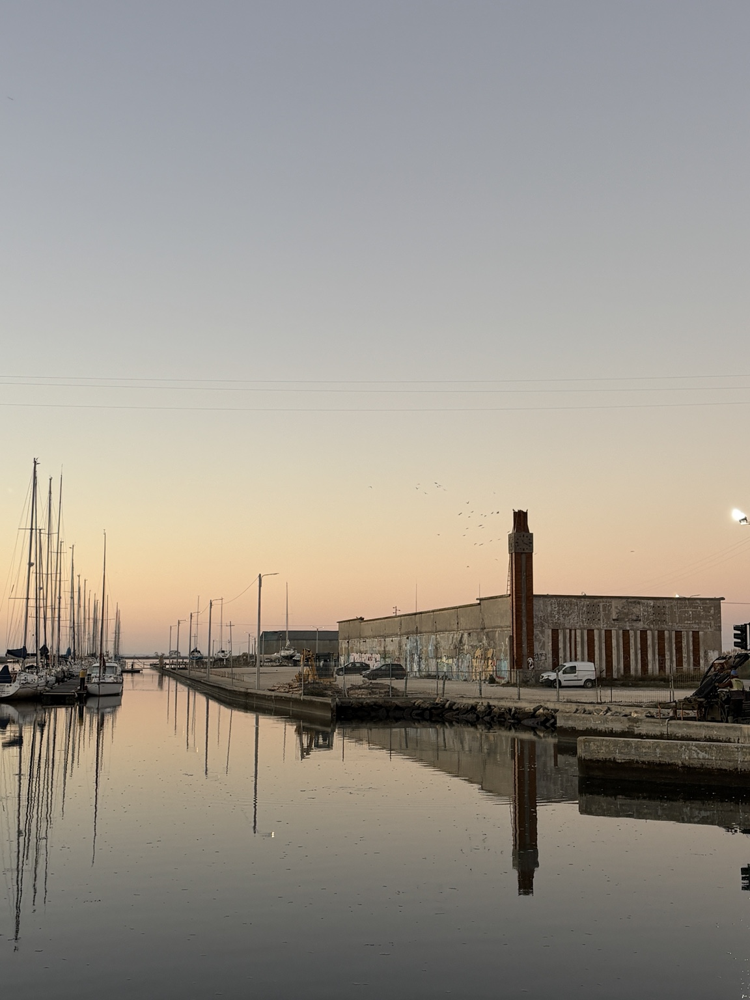
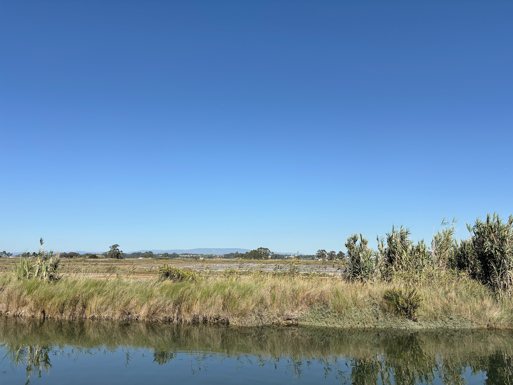
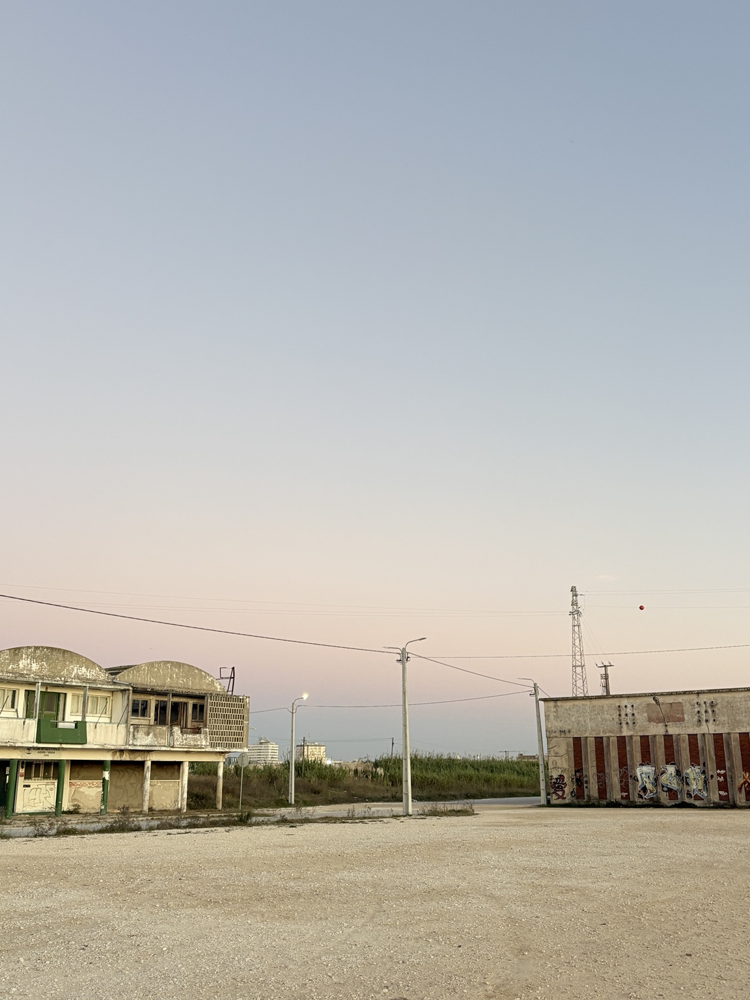
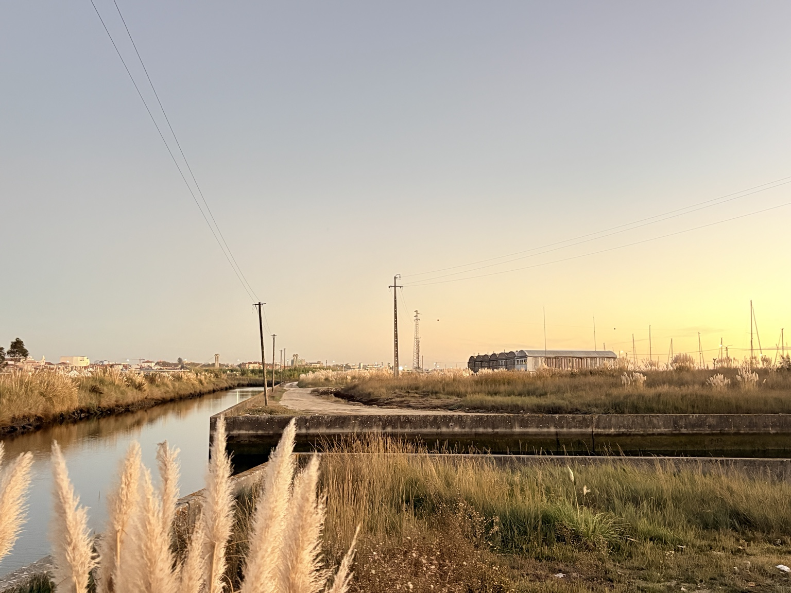
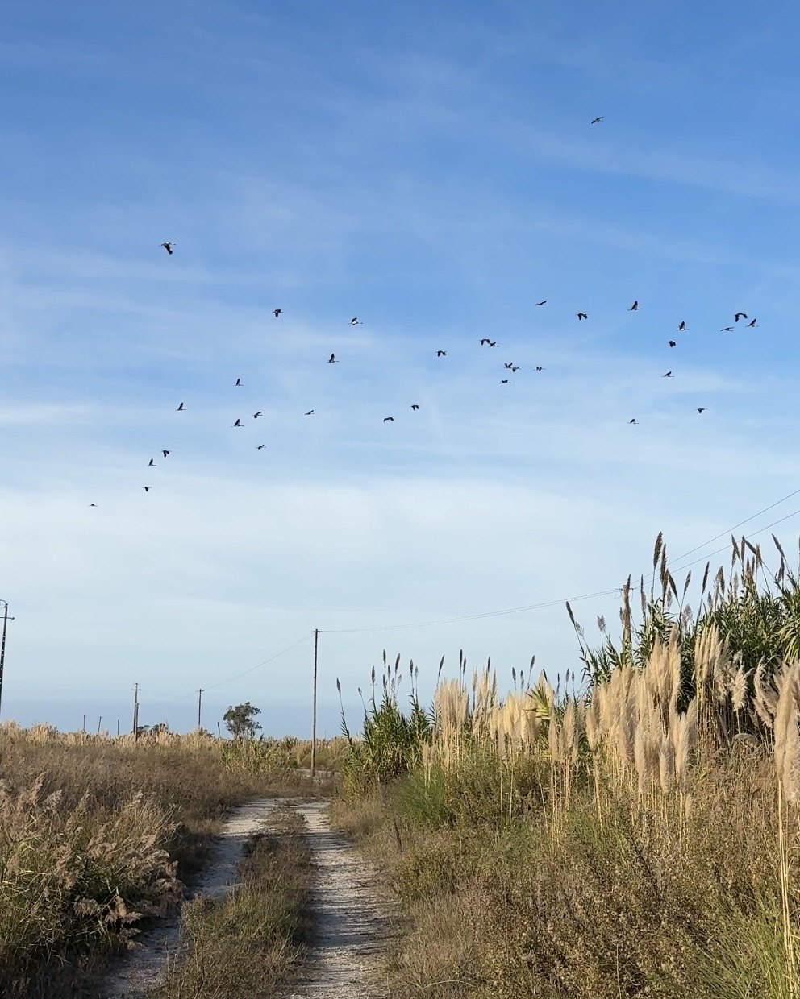
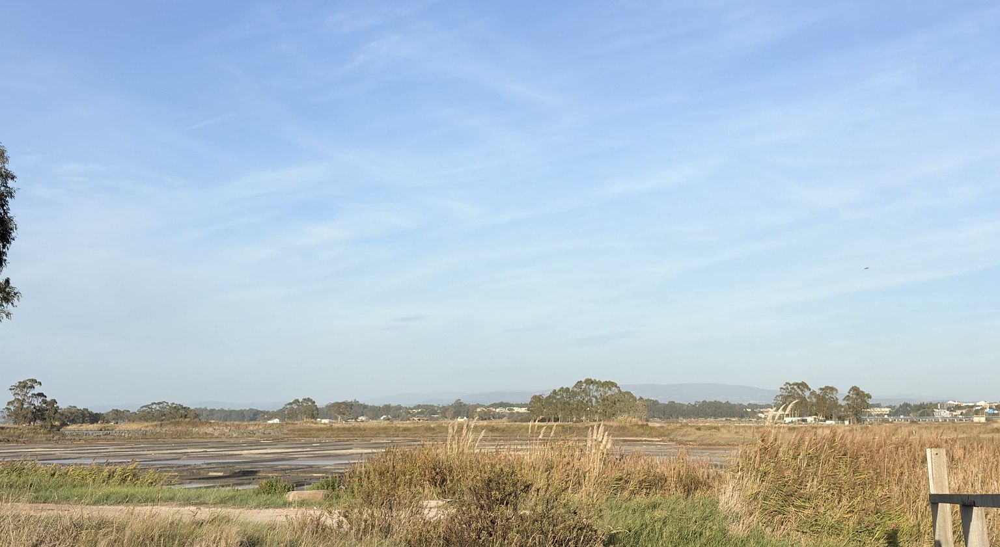
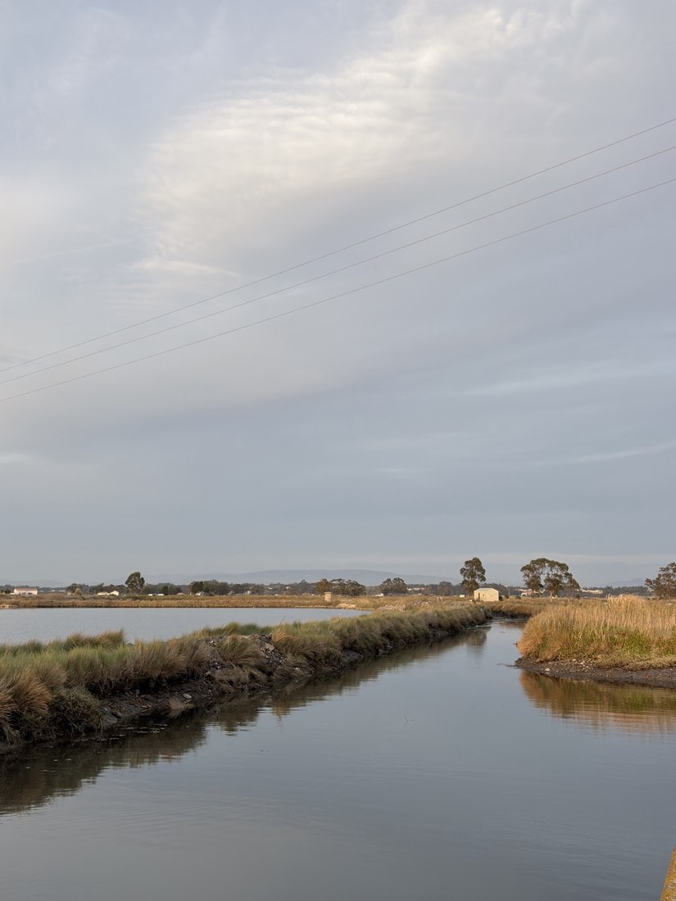

Wetlands & habitats
Tidal waters, salt-tolerant vegetation and shallow habitats form a sensitive ecological network.
Aveiro plans a new neighbourhood on former port land beside the Ria de Aveiro: homes, a hotel, shops and roads. But why build more here, next to a sensitive lagoon? What will happen to the birds, the waterfront and the life already around it — and was leaving more space for nature ever a serious option?
If you love this water, these birds and this quiet landscape, this question concerns you. The Ria is not a luxury view for a few people, nor simply a place to make money. It is a living world with a value of its own.
Se gosta desta água, destas aves e desta paisagem tranquila, esta questão também lhe diz respeito. A Ria não é uma vista de luxo para poucos, nem apenas um lugar para gerar lucro. É um mundo vivo, com valor próprio.
Imagine walking into an exhibition about the future of Antiga Lota. It is February 2023. On the walls are architects’ drawings of what this old waterfront might become. Visitors can look at the proposals and leave their comments.
But there is a question that comes before the drawings. What if we don't want a new neighbourhood here at all? What if we would rather keep this part of the Ria quieter, with its boats, open spaces and room for nature?
Being invited to comment on the design of new buildings is not quite the same as being invited to decide whether they should be built. We know that an exhibition took place and comments were welcomed. What we have not yet found in the records reviewed for this project is a wider public debate where keeping the area largely free of new housing was clearly put forward as an alternative.
These are not just our questions. In November 2025, the Aveiro branch of the environmental organisation Quercus also raised concerns about transparency and public participation. Before the future of this waterfront is decided, shouldn't people have a chance to discuss the choice itself, not only the appearance of what might be built?
Imagine entrar numa exposição sobre o futuro da Antiga Lota. Estamos em fevereiro de 2023. Nas paredes, há desenhos de arquitetos que mostram como esta antiga frente de água poderá ficar. Quem visita a exposição pode ver as propostas e deixar comentários.
Mas há uma pergunta que vem antes dos desenhos. E se não quisermos um novo bairro aqui? E se preferirmos manter esta parte da Ria mais tranquila, com os seus barcos, espaços abertos e lugar para a natureza?
Ser convidado a comentar o aspeto de novos edifícios não é bem o mesmo que poder discutir se devem ser construídos. Sabemos que houve uma exposição e que foram recebidos comentários. O que ainda não encontrámos nos documentos analisados para este projeto foi um debate público mais amplo em que manter a área maioritariamente livre de nova habitação tenha sido claramente apresentado como alternativa.
Não somos os únicos a fazer estas perguntas. Em novembro de 2025, o núcleo de Aveiro da associação ambiental Quercus também levantou dúvidas sobre a transparência e a participação pública. Antes de decidir o futuro desta margem, não deveriam as pessoas poder discutir a própria escolha, e não apenas o aspeto do que se pretende construir?
Quem apoiou os planos e quem levantou dúvidas? Conheça a história →
Antiga Lota is a former port and fish-market area at the edge of the Ria de Aveiro. A municipal redevelopment proposal, Parque das Marinhas, includes housing, hospitality, commerce and public spaces.
In 2024, the Portuguese government approved transferring approximately 118,000 m² to the municipality. Its financial terms anticipate future land-plot sales. The final development footprint and the environmental approval status still need verification.
Who benefits from building here? What would be lost? And was protecting or restoring the land without new housing ever considered seriously?

In Spain, major coastal development plans were stopped and damaged wetlands restored. Other towns have protected the landscapes they could have built on. Could Aveiro consider a different future for Antiga Lota?
See how other places chose natureEm Espanha, grandes projetos de urbanização costeira foram travados e zonas húmidas degradadas foram recuperadas. Outros municípios protegeram paisagens onde poderiam ter construído. Poderá Aveiro pensar num futuro diferente para a Antiga Lota?
Veja como outros lugares escolheram a naturezaWalk along the old port strip and you see two different stories at once: concrete, old buildings and moored boats — but also reeds, water and salt pans just beyond them. The former port sits within the Ria de Aveiro lagoon landscape, with water and wetlands on more than one side. It isn't a greenfield paradise. And it isn't a blank space waiting for a hotel, either.
Some of this area is still used. AVELA — Associação Aveirense de Vela de Cruzeiro has a listed address at Warehouse 7 of the old fish market. The municipality also lists Clube de Caça e Pesca de Aveiro/Vouga at Building 2. Close by, Clube dos Galitos' rowing section has a nautical base and runs rowing activities. These organisations are part of the site's life today.
Here is the choice: repair what is unsafe and keep the quieter nautical uses — or bring in a much busier urban district? The city describes a scheme with homes, a hotel, shops, restaurants, spaces for nautical clubs, an environmental centre, a green area and a mooring facility. That is an enormous change in how this shoreline could be used.

Quem percorre a antiga faixa portuária encontra duas histórias ao mesmo tempo: betão, edifícios antigos e barcos atracados — mas também caniços, água e marinhas de sal logo ao lado. A antiga zona portuária fica dentro da paisagem lagunar da Ria de Aveiro, com água e zonas húmidas em mais do que um dos seus lados. Não é natureza intocada. Mas também não é um espaço vazio à espera de um hotel.
Esta zona continua a ter vida. A AVELA — Associação Aveirense de Vela de Cruzeiro tem morada registada no Armazém 7 da antiga lota. A Câmara também indica o Clube de Caça e Pesca de Aveiro/Vouga no Edifício 2. Perto dali, a secção de remo do Clube dos Galitos tem instalações náuticas e atividades de remo. Estas associações já fazem parte do lugar.
É esta a escolha: recuperar o que está degradado e manter os usos náuticos mais tranquilos — ou criar um bairro muito mais movimentado? A Câmara descreve um projeto com habitação, hotel, lojas, restaurantes, espaços para associações náuticas, centro ambiental, zona verde e ancoradouro. Isso poderá mudar profundamente a forma como esta margem é utilizada.
More homes and hospitality do not mean just more walls. They would likely mean more cars, deliveries, parking, people at night and artificial light. Noise and light can disturb wildlife, while new hard surfaces can change rainwater runoff. The size of any effects still needs proper study — but these are not small questions beside a lagoon.
Why choose the most intensive use of this land before showing what the quieter alternatives would look like? Keep the boating and rowing, make existing structures safe, and explore careful restoration of disturbed ground wherever studies show it is possible. Not every piece of land needs to produce rent to have a future.
Mais casas e hotelaria não significam apenas mais paredes. É provável que tragam mais carros, entregas, estacionamento, pessoas à noite e iluminação artificial. O ruído e a luz podem perturbar os animais, e novas superfícies impermeáveis podem alterar o escoamento da chuva. A dimensão dos impactos ainda precisa de ser estudada — mas são questões importantes junto de uma laguna.
Porquê escolher um uso tão intenso antes de mostrar como seriam alternativas mais tranquilas? Manter a vela e o remo, tornar seguros os edifícios existentes e estudar a recuperação cuidadosa das zonas alteradas onde isso for possível. Um terreno não precisa de gerar rendas para ter um futuro.

Antiga Lota occupies a long, narrow strip of former port land among the waters and salt pans of the Ria de Aveiro. The Portuguese government's 2024 decision describes a 118,000 m² property and includes the official boundary plan as an annex. This is the legal starting point for any map of what was transferred.
The site is surrounded by the lagoon landscape, not separated from it. More building here could bring everyday traffic, lighting and noise further into that setting. This does not mean the entire 118,000 m² will be covered with buildings: the outline of the transferred property and the exact footprint of proposed works must be distinguished.
A Antiga Lota ocupa uma faixa longa e estreita de antigos terrenos portuários entre as águas e as marinhas de sal da Ria de Aveiro. A decisão do Governo de 2024 descreve um terreno de 118 000 m² e inclui a planta oficial dos limites em anexo. É por aí que deve começar qualquer mapa da área transferida.
O terreno está envolvido pela paisagem lagunar, não separado dela. Mais construção poderá levar trânsito diário, iluminação e ruído para dentro deste ambiente. Isso não significa que os 118 000 m² venham a ficar cobertos de edifícios: é preciso distinguir o limite do terreno transferido da área concreta das obras previstas.


There are places you remember by their silence. The sound of water, the birds passing overhead, the grasses moving with the breeze. The Ria de Aveiro is one of them. It is not an empty space waiting for something to happen.
Plans to build beside this landscape concern me. This project began with one resident asking a simple question: why not protect what is already here, instead of always looking for something new to build?
This is an independent initiative by one Aveiro resident, not an organisation or a group campaign. It welcomes everyone who cares about the Ria. No breach of environmental law is claimed without evidence; unanswered questions are clearly identified.
The Ria is already home to countless lives. Birds rest and feed here. Plants take root in salty ground. The tides come and go. None of this needs to produce a profit, become an attraction, or serve a property development to have value.
The aim is not another landscaped park with more paths and lights. It is to ask whether nature can be left undisturbed — and, where human activity has caused damage, allowed to recover with as little interference as possible.
This conservation perspective guides the project. The precise protection status and habitats of each Antiga Lota parcel still need verification.
Water, mud, reeds, saltmarshes and birds are not empty scenery. Together they make a living world, shaped over centuries, with rhythms of its own. It deserves care simply because it exists.

Tidal waters, salt-tolerant vegetation and shallow habitats form a sensitive ecological network.

The wider protected Ria provides breeding, resting and feeding environments for different bird populations.

Salt production, fishing, port activity and coastal processes shaped the landscape we see today.
I am asking the responsible authorities to take ecological risks seriously, share existing environmental assessments and examine an alternative without new residential development. Any required nature-protection checks should come before potentially irreversible changes.
The available information does not yet establish a legal violation or prove that every part of Antiga Lota lies within Natura 2000. Those questions need proper assessment.
The Ria de Aveiro did not begin as vacant land. Its channels and saltmarshes took shape over centuries through moving sand, rivers, tides and human activity. The coastal barrier developed from around the tenth century; in 1808, the present inlet was opened to the sea.
Fishing, salt production and navigation are part of this landscape's human history. But the history of the whole lagoon is not the same as the history of the Antiga Lota parcel. The latter includes former port and fish-market structures, and parts of the land have been altered by people. The exact history of individual plots is still being researched.
A Ria de Aveiro não começou como um terreno vazio. Os canais e sapais formaram-se ao longo de séculos, pela ação das areias, dos rios, das marés e das pessoas. O cordão litoral desenvolveu-se a partir de cerca do século X; em 1808 foi aberta a barra atual.
A pesca, as salinas e a navegação fazem parte da história humana da paisagem. Mas a história de toda a Ria não é a mesma que a história de cada parcela da Antiga Lota. Aqui existiram estruturas portuárias e da lota, e há terrenos transformados pela atividade humana. A história precisa de cada parcela continua em investigação.
Look across the Ria de Aveiro and you will see much more than water. There are mudflats, saltmarsh plants, fish and birds. Some birds stop here to rest or feed during their journeys; others live and breed around the lagoon. These places are connected. Changes in one part of the shoreline can affect life beyond it.
Parts of the Ria are protected by Natura 2000, a European network of places important for nature. Portugal approved a new conservation plan for these areas in 2026. That means the effects of nearby development also matter: a project does not have to stand inside a protected area to affect it.
For Antiga Lota, the question is straightforward: before adding more buildings, traffic, noise and lighting, have the effects on nearby habitats and birds been properly studied? The precise boundaries and findings should be available for everyone to examine.
Olhar para a Ria de Aveiro é ver muito mais do que água. Há lodos, plantas dos sapais, peixes e aves. Algumas aves param aqui para descansar ou alimentar-se durante as suas viagens; outras vivem e reproduzem-se na região. Estes lugares estão ligados entre si. Uma alteração numa parte da margem pode afetar a vida para além dela.
Partes da Ria integram a Rede Natura 2000, uma rede europeia de espaços importantes para a natureza. Portugal aprovou em 2026 um novo plano de conservação para estas áreas. Por isso, os efeitos das construções próximas também importam: um projeto não precisa de estar dentro de uma área protegida para a afetar.
Na Antiga Lota, a pergunta é simples: antes de acrescentar edifícios, trânsito, ruído e iluminação, foram devidamente estudados os efeitos sobre as aves e os habitats próximos? Os limites e as conclusões desses estudos devem poder ser consultados por todos.
A city hall cannot simply build on land it does not own. A port authority cannot decide the future of a city neighbourhood on its own. And an architect's drawing is not a building permit. The story of Antiga Lota involves several institutions, each making a different kind of decision. Understanding who was responsible for what matters more than repeating the same dates.
Uma Câmara não pode simplesmente construir num terreno que não lhe pertence. Uma administração portuária não decide sozinha o futuro de um bairro. E um desenho de arquitetura não é uma licença de construção. A história da Antiga Lota envolve várias instituições, com responsabilidades distintas. Perceber quem fez o quê é mais importante do que voltar a repetir as mesmas datas.
The municipality has been the public face of the redevelopment proposal. Under José Ribau Esteves, Mayor of Aveiro from 2013 to 2025, it pursued control of the former port land, promoted the architectural competition and announced the detailed design contract. Those are documented municipal steps. They do not, on their own, tell us why building was preferred to a quieter alternative. Luís Souto de Miranda, Mayor since 2025, is responsible for the municipality's subsequent position and decisions, not automatically for every earlier choice.
A Câmara tem sido o rosto público da proposta de transformação. Durante a presidência de José Ribau Esteves, presidente da Câmara entre 2013 e 2025, procurou obter os antigos terrenos portuários, promoveu o concurso de arquitetura e anunciou o contrato do projeto de loteamento. São passos documentados, mas não explicam, por si só, por que razão se preferiu construir em vez de estudar uma alternativa mais tranquila. Luís Souto de Miranda, presidente da Câmara desde 2025, responde pelas posições e decisões municipais posteriores, não automaticamente por todas as escolhas anteriores.
Câmara · minutes, March 2023 ↗ · Câmara · design contract, 2025 ↗
The Port Administration's role was different: it held the land whose transfer the city sought. The legal history of that land, including the 2008 arrangements, helps explain why a deal with the port mattered. A municipal account says earlier attempts at a free transfer met resistance. To know exactly which conditions both sides accepted in August 2023, the signed agreement itself remains essential.
O papel da Administração do Porto era diferente: detinha os terrenos que a Câmara pretendia receber. A história jurídica desses terrenos, incluindo as regras estabelecidas em 2008, ajuda a perceber por que motivo foi necessário um acordo. Segundo o relato municipal, tentativas anteriores de transferência gratuita encontraram oposição. Para conhecer as condições aceites em agosto de 2023, continua a ser essencial consultar o acordo assinado.
The Council of Ministers authorised the property transfer in Resolution 34/2024, setting its financial conditions. This is an important distinction: the government settled the framework for transferring the land; that resolution is not, by itself, proof that an environmental assessment approved every proposed building. The link between the payment terms and future plot sales deserves public explanation.
O Conselho de Ministros autorizou a transferência do imóvel através da Resolução 34/2024, definindo as condições financeiras. Há uma distinção importante: o Governo estabeleceu as regras da transferência; a resolução não demonstra, por si só, que uma avaliação ambiental tenha aprovado todos os edifícios propostos. A ligação entre os pagamentos e a futura venda de lotes merece uma explicação pública.
Cátia Alexandre and Nuno Costa, of dois arquitectos, were selected through the architectural competition. Their work gave the proposed neighbourhood a visible form; the municipality later commissioned further design work. But winning a competition does not mean the public has agreed that housing and a hotel should be built here at all. Who set the brief, and which alternatives were allowed to compete?
Cátia Alexandre e Nuno Costa, dos dois arquitectos, foram selecionados através do concurso de arquitetura. O trabalho deu uma forma visível ao bairro proposto; mais tarde, a Câmara contratou desenvolvimento adicional do projeto. Mas vencer um concurso não significa que a população tenha concordado com a construção de habitação e de um hotel neste local. Quem definiu o programa e que alternativas puderam concorrer?
Quercus Aveiro publicly questioned transparency, participation and environmental sensitivity in 2025. Residents can also ask for records and assessments. Neither an environmental organisation nor an individual resident is the authority granting permission. Their contribution is to examine the official choices and to insist that alternatives be discussed before irreversible changes are made.
A Quercus Aveiro questionou publicamente a transparência, a participação e a sensibilidade ambiental da zona em 2025. Os moradores também podem pedir documentos e avaliações. Nem uma associação ambiental nem um residente individual são a autoridade que autoriza obras. O seu contributo é escrutinar as opções oficiais e exigir que as alternativas sejam discutidas antes de alterações irreversíveis.
It didn't happen overnight. First there were salt pans and fishing boats. Then the port changed, the city wanted the land, and a long argument began. Here's how it unfolded.
Não aconteceu de um dia para o outro. Primeiro havia marinhas de sal e barcos de pesca. Depois, o porto mudou, a Câmara quis os terrenos e começou uma longa disputa. Foi assim que tudo aconteceu.
Long before anyone talked about hotels, this was part of the Ria's world of water and salt. The port later took over old salt pans and filled parts of the shore to make space for work. A fish market, warehouses and boat facilities appeared. Some of those buildings are still here today.
Muito antes de alguém falar em hotéis, este lugar fazia parte da paisagem de água e sal da Ria. Mais tarde, o porto ocupou antigas marinhas de sal e aterrou partes da margem para criar espaço de trabalho. Surgiram a lota, armazéns e instalações para barcos. Alguns desses edifícios ainda lá estão.
As port activities moved away, the old site began to lose its purpose. The authorities saw a chance to give it a new life. The Polis programme promised a better waterfront, but the plans already included a hotel, shops, cafés and new buildings. So the idea of building here isn't new. It began more than twenty-five years ago.
Quando as atividades portuárias mudaram de lugar, esta zona começou a perder a sua função. As autoridades viram uma oportunidade para lhe dar uma nova vida. O programa Polis prometia melhorar a frente de água, mas os planos já incluíam hotelaria, lojas, cafés e novos edifícios. Portanto, a ideia de construir aqui não é recente. Começou há mais de vinte e cinco anos.
Before the new town plan was approved, the nature conservation institute gave an opinion with certain conditions. We know this because a public document from 2003 mentions it. But what did the experts study? Were the birds, the water and the saltmarshes considered? The full opinion would help answer that. In 2004 the city approved the plan, and the government confirmed it in 2005. It allowed homes, shops and services in part of the old port area.
Antes de ser aprovado o novo plano urbano, o instituto de conservação da natureza deu um parecer com algumas condições. Sabemos disso porque um documento público de 2003 o menciona. Mas o que estudaram os especialistas? Analisaram as aves, a água e os sapais? O parecer completo pode ajudar a responder. Em 2004, a Câmara aprovou o plano e, em 2005, o Governo confirmou-o. Parte da antiga zona portuária passou a poder ter habitação, comércio e serviços.
The city wanted to change Antiga Lota, but it didn't own the site. The Port Administration hadn't agreed to hand it over. Then, in 2008, a new law put the land into the port company's assets and made clear that selling it could help pay for the planned works. That made money — as well as planning — part of the story.
A Câmara queria mudar a Antiga Lota, mas os terrenos não eram seus. A Administração do Porto ainda não tinha aceite entregá-los. Depois, em 2008, uma nova lei integrou-os no património da empresa portuária e deixou claro que a sua venda poderia ajudar a pagar as obras previstas. A partir daí, o dinheiro passou a fazer parte desta história, a par do planeamento.
Years later, Mayor José Ribau Esteves tried a new approach. The city argued that a law should let it receive the old port land for free. The government disagreed. According to the municipality, Minister Pedro Nuno Santos pointed to legal advice, and the Port Administration supported that decision. Aveiro didn't give up. It started talking about paying for the land instead. That's the city's version of events; hearing the port's explanation would help tell the whole story.
Anos mais tarde, o presidente da Câmara, José Ribau Esteves, tentou outra solução. A Câmara defendia que uma lei lhe permitia receber os antigos terrenos do porto gratuitamente. O Governo discordou. Segundo o Município, o ministro Pedro Nuno Santos invocou pareceres jurídicos e a Administração do Porto apoiou essa decisão. Aveiro não desistiu. Começou então a negociar a compra dos terrenos. Esta é a versão da Câmara; conhecer a explicação do porto ajudaria a contar a história completa.
The city asked architects for ideas. Their drawings were shown in February 2023, and visitors could leave comments. But there's a difference between choosing what new buildings might look like and asking whether those buildings should be here at all. Was a future with fewer buildings, or none, seriously put on the table? That is still worth asking.
A Câmara pediu ideias a arquitetos. Os desenhos foram apresentados em fevereiro de 2023 e os visitantes puderam deixar comentários. Mas há uma diferença entre escolher o aspeto de novos edifícios e perguntar se esses edifícios devem sequer existir neste lugar. Foi realmente posta em cima da mesa a hipótese de construir menos, ou de não construir? Vale a pena fazer esta pergunta.
In August 2023, the port and the city reached an agreement. The following March, the government allowed about 118,000 square metres of land to pass to the municipality. Aveiro had to pay €6,716,675 plus 5% interest. Part of that money was meant to come from future sales of building plots. The long argument over who controlled the land was finally settled. The bigger question wasn't: what should happen to this place now?
Em agosto de 2023, o porto e a Câmara chegaram a acordo. Em março seguinte, o Governo autorizou a passagem de cerca de 118 000 metros quadrados para o Município. Aveiro teria de pagar 6 716 675 €, mais juros de 5%. Parte desse dinheiro viria de futuras vendas de lotes. A longa disputa sobre quem ficaria com os terrenos ficou resolvida. Mas continuava uma pergunta maior: o que deveria acontecer agora a este lugar?
In October 2025, Aveiro announced a €730,976 contract to draw up the detailed plans for a new area with homes, a hotel and shops. A month later, the local branch of Quercus raised concerns about how decisions had been made and how people had been involved. Then, in 2026, Portugal approved new rules for caring for the Ria's Natura 2000 sites. So here we are: the city has a building plan, and residents still have good reasons to ask what it could mean for the birds, the water and the quiet shores around it.
Em outubro de 2025, Aveiro anunciou um contrato de 730 976 € para preparar os planos detalhados de uma nova zona com casas, hotelaria e comércio. Um mês depois, o núcleo local da Quercus levantou dúvidas sobre a forma como as decisões tinham sido tomadas e sobre a participação das pessoas. Em 2026, Portugal aprovou novas regras para cuidar das áreas Natura 2000 da Ria. E é aqui que estamos: a cidade tem um plano de construção e há boas razões para perguntar o que poderá significar para as aves, a água e a tranquilidade das margens.
Official documents wherever possible, with confirmed decisions clearly separated from open questions.
The published architectural concept is not presented here as a final construction permit. This preview is not a published government or NGO website.
In October 2025, Aveiro City Council announced the contract for the new Antiga Lota design. It spoke about making the area environmentally sustainable. But the announcement did not link to a study that people could read, or to an opinion from ICNF — Portugal’s nature conservation authority.
What happens to the birds when more lights, cars and buildings arrive? What about the water, the nearby saltmarshes and the places where wildlife rests and feeds? And did anyone seriously compare this plan with an option that leaves more room for nature?
Those studies may exist — the announcement simply does not show them. That is why it matters to make the evidence easy for everyone to find, not only for specialists who know where to look.
Em outubro de 2025, a Câmara Municipal de Aveiro anunciou o contrato para o projeto da Antiga Lota. Falou numa transformação ambientalmente sustentável. Mas a notícia não apresentava uma ligação para um estudo que todos pudessem ler, nem para um parecer do ICNF — Instituto da Conservação da Natureza e das Florestas.
O que acontecerá às aves quando chegarem mais luzes, carros e edifícios? E à água, aos sapais próximos e aos lugares onde os animais descansam e se alimentam? Alguém comparou seriamente esta proposta com a hipótese de deixar mais espaço à natureza?
Esses estudos podem existir — simplesmente não aparecem naquela notícia. Por isso, é importante que toda a gente os possa encontrar e compreender, não apenas quem conhece os procedimentos oficiais.
Aveiro municipality · 17 October 2025 ↗Câmara Municipal de Aveiro · 17 de outubro de 2025 ↗
Behind every plan are people making choices. Some worked for years to turn the old port into a new neighbourhood. Others began asking whether the city was listening enough to residents — and what the new buildings could mean for the Ria.
Por trás de cada plano há pessoas que fazem escolhas. Algumas trabalharam durante anos para transformar a antiga zona portuária num novo bairro. Outras começaram a perguntar se a Câmara estava realmente a ouvir os moradores — e o que os novos edifícios poderiam significar para a Ria.
Matos Rodrigues, a technical leader of the Polis urban renewal programme, explained why the earlier plan had stalled: the city and Port Administration could not agree on the land. The disagreement kept the redevelopment on hold for years.
Matos Rodrigues, responsável técnico do programa de requalificação urbana Polis, explicou por que razão o plano tinha parado: a Câmara e a Administração do Porto não chegaram a acordo sobre os terrenos. Essa divergência atrasou a transformação durante anos.
2007 · historical report ↗2007 · notícia da época ↗The Socialist Party (PS) and Left Bloc (Bloco de Esquerda) are Portuguese political parties. Their local representatives raised questions about the housing planned for Antiga Lota and how residents were being included. The city did show architectural proposals in February 2023 and invited comments. But seeing a set of building designs is not the same as being asked whether the land should be built on at all.
O Partido Socialista (PS) e o Bloco de Esquerda são partidos políticos portugueses. Os seus representantes locais levantaram dúvidas sobre as habitações propostas e a participação dos moradores. A Câmara mostrou projetos de arquitetura em fevereiro de 2023 e recebeu comentários. Mas ver propostas de edifícios não é o mesmo que poder discutir se a construção deve acontecer sequer.
Aveiro City Council · minutes, 8 March 2023 ↗José Ribau Esteves was Mayor of Aveiro from 2013 to 2025. He spent years trying to bring the former port land under the city's control and supported its redevelopment. When the transfer was finally approved in 2024, it was a major step towards the plans he had defended.
José Ribau Esteves foi presidente da Câmara Municipal de Aveiro de 2013 a 2025. Durante anos, procurou trazer os antigos terrenos portuários para a gestão municipal e defendeu a sua transformação. A autorização da transferência em 2024 foi um passo importante para concretizar esses planos.
Câmara · account of the negotiations ↗In its account of the negotiations, the municipality also names António Costa (then Prime Minister of Portugal), Fernando Medina (then Finance Minister), Ana Abrunhosa (then Minister for Territorial Cohesion) and António Furtado (then chair of ESTAMO, a state-owned property company). These names tell us who was involved in the land discussions. They do not mean that each person personally approved the later buildings.
No seu relato das negociações, a Câmara refere também António Costa (então primeiro-ministro), Fernando Medina (então ministro das Finanças), Ana Abrunhosa (então ministra da Coesão Territorial) e António Furtado (então presidente da ESTAMO, empresa pública imobiliária). Estes nomes ajudam a perceber quem participou nas negociações dos terrenos. Não significam que cada pessoa tenha aprovado pessoalmente os edifícios previstos mais tarde.
Municipality · account of negotiations ↗Quercus is a Portuguese nature conservation organisation. Its Aveiro branch publicly challenged the way the project was moving forward. It raised concerns about transparency, the limited role of residents in decisions and the ecological sensitivity of the land. Those concerns deserve more than a passing mention. As far as the documents reviewed here show, the public has not been given a clear chance to debate the basic choice: new homes and a hotel, or a future with far less construction. The 2023 exhibition did allow comments, but that is a narrower kind of participation.
A Quercus é uma associação portuguesa de defesa da natureza. O seu núcleo de Aveiro criticou publicamente a forma como o projeto estava a avançar. Levantou preocupações sobre a transparência, a participação limitada dos moradores nas decisões e a sensibilidade ecológica do local. Estas preocupações merecem atenção. Nos documentos aqui analisados, não foi possível identificar uma oportunidade clara para a população debater a escolha principal: novas casas e um hotel ou um futuro com muito menos construção. A exposição de 2023 permitiu comentários, mas isso é uma forma mais limitada de participação.
Quercus · public position reported in 2025 ↗Luís Souto de Miranda, Mayor of Aveiro since 2025, listed the transformation of Antiga Lota into an area with housing, tourism, culture, nautical activities and green spaces among the city's major projects in his January 2026 message. So the redevelopment remains a political priority under the new mayor.
But the real question is not what officials want to build. It is whether anything more should be built here at all. Where is the open discussion that lets the people who live beside the Ria choose between a busy new neighbourhood and a quieter, nature-led future? The architecture exhibition in 2023 allowed comments, but the records reviewed here have not shown a broad discussion of that choice.
Luís Souto de Miranda, presidente da Câmara de Aveiro desde 2025, incluiu a transformação da Antiga Lota numa zona com habitação, turismo, cultura, atividades náuticas e espaços verdes entre os grandes projetos municipais na sua mensagem de janeiro de 2026. Portanto, a transformação continua a ser uma prioridade política.
Mas a pergunta principal não é o que os responsáveis políticos querem construir. É se faz sentido construir ainda mais neste lugar. Onde está o debate aberto em que quem vive junto à Ria possa escolher entre um novo bairro movimentado e um futuro mais tranquilo, com a natureza em primeiro lugar? A exposição de arquitetura de 2023 permitiu comentários, mas os documentos aqui analisados não mostram um debate amplo sobre essa escolha.
Luís Souto de Miranda · statement, January 2026 ↗Resolution 34/2024 identifies approximately 118,000 m² of former port property and includes a plan as an annex. The property transferred to the municipality is not necessarily identical to the footprint of proposed buildings or Natura 2000 boundaries. The exact overlay with current moorings, nautical clubs, green areas and protected sites still requires verification.
Former port use helps explain why the transfer was proposed, but does not by itself establish that housing, a hotel or commercial construction is the ecologically preferable next use.
A Resolução 34/2024 identifica cerca de 118 000 m² de antigos terrenos portuários e inclui uma planta em anexo. Os terrenos transferidos não correspondem necessariamente à implantação dos edifícios propostos nem aos limites da Rede Natura 2000. Falta verificar a sobreposição exata com os atuais ancoradouros, clubes náuticos, espaços verdes e áreas protegidas.
O uso portuário anterior ajuda a explicar a transferência, mas não demonstra, por si só, que habitação, hotelaria ou comércio sejam a melhor opção ecológica.
Environmental questions and request for information submitted.
Documents and current status of the Antiga Lota project requested.
Preventive assessment of possible environmental risks requested.
The old port strip is not abandoned. People walk here, boats moor here, and nautical clubs use the waterfront. Nearby reeds, water and salt pans are part of the wider lagoon landscape. The proposed neighbourhood would not arrive overnight: construction could mean lorries, machinery, dust, noise, brighter lights and temporary barriers beside the water.
These are potential effects, not a confirmed construction timetable. We have yet to find a publicly verified start date, duration, phasing plan, or clear description of which paths, shorelines and nautical activities would remain accessible during the works.
The concern is not only what the neighbourhood will look like when it is finished, but what happens during the works. Construction near walking paths and nautical facilities could make this currently accessible waterfront louder, busier and less pleasant to visit. Birds may avoid areas exposed to repeated disturbance; whether that happens here, and which species or habitats would be affected, needs a site-specific assessment rather than an assumption that all wildlife will disappear.
What would be done to protect birds and other wildlife? How would dust, stormwater runoff, noise and night-time lighting be controlled? Could some existing buildings be restored without turning this waterfront into a new urban district? These questions matter just as much as the finished architectural drawings.
Câmara Municipal de Aveiro — official municipal information ↗ · Resolução do Conselho de Ministros n.º 34/2024 ↗
A antiga zona portuária não está abandonada. Há pessoas que passeiam, barcos atracados e clubes náuticos que utilizam esta frente de água. Perto dali, os caniços, a água e as marinhas de sal fazem parte da paisagem lagunar. O novo bairro não apareceria de um dia para o outro: as obras poderão trazer camiões, máquinas, poeiras, ruído, mais iluminação e barreiras temporárias junto à água.
São efeitos possíveis, não um calendário de obras confirmado. Ainda não encontrámos uma data de início, uma duração, um plano de fases ou uma explicação pública e verificada sobre os caminhos, margens e atividades náuticas que continuariam acessíveis durante os trabalhos.
A preocupação não é apenas como ficará o bairro depois de concluído, mas o que acontecerá durante as obras. A construção junto aos percursos pedonais e às instalações náuticas poderá tornar esta frente de água, hoje acessível, mais ruidosa, movimentada e menos agradável. Algumas aves poderão evitar zonas sujeitas a perturbação frequente; saber se isso acontecerá aqui, e que espécies ou habitats poderão ser afetados, exige uma avaliação específica, em vez de assumir que todos os animais desaparecerão.
Que medidas protegeriam as aves e os restantes animais? Como seriam controlados as poeiras, o escoamento das águas pluviais, o ruído e a iluminação noturna? Seria possível recuperar alguns edifícios existentes sem transformar esta margem num novo bairro? Estas perguntas são tão importantes como os desenhos do projeto final.
Câmara Municipal de Aveiro — informação oficial ↗ · Resolução do Conselho de Ministros n.º 34/2024 ↗
The plans for Parque das Marinhas include a hotel. Visitors are important to Aveiro, but that does not, on its own, explain why new accommodation should be built here, right beside the Ria. Even if the city needs more hotel rooms, why on this particular waterfront rather than somewhere already urbanised?
To answer fairly, we need to compare official statistics for hotels and other tourist accommodation, beds, overnight stays, occupancy and seasonality. Hotels and Alojamento Local are different statistical categories; totals should not be mixed without checking what they measure. We also need to know the planned hotel's size and whether an official economic study considered different locations.
The question is not whether tourism is good or bad. It is whether this location — next to water, wetland habitats and living parts of the lagoon — was shown to be necessary, and whether less disruptive alternatives were genuinely considered.
PORDATA — tourism in Aveiro ↗ · Câmara Municipal — March 2023 bulletin and proposed scheme ↗
Os planos para o Parque das Marinhas incluem um hotel. Os visitantes são importantes para Aveiro, mas isso não explica, por si só, por que razão deve ser construído novo alojamento aqui, mesmo ao lado da Ria. Mesmo que a cidade precise de mais quartos, porquê nesta frente de água e não num local já urbanizado?
Para responder com rigor, precisamos de comparar estatísticas oficiais sobre hotéis e outras formas de alojamento turístico, camas, dormidas, ocupação e sazonalidade. A hotelaria e o Alojamento Local são categorias estatísticas diferentes; não devemos juntar números sem verificar o que representam. Precisamos também de conhecer a dimensão prevista para o hotel e saber se algum estudo económico oficial considerou outras localizações.
A questão não é saber se o turismo é bom ou mau. É perceber se ficou demonstrada a necessidade de construir precisamente neste lugar — junto à água, às zonas húmidas e à vida da laguna — e se foram seriamente ponderadas alternativas com menor impacto.
PORDATA — turismo em Aveiro ↗ · Câmara Municipal — boletim de março de 2023 ↗
2007–2010: the port tried to sell the land. A Diário de Aveiro report reproduced by a local dockworkers' archive says the Port of Aveiro offered the former fish-market land at public auction for €12 million in 2007, without attracting a buyer. In January 2010 it was offered again for €10.5 million. The then port chairman, José Luís Cacho, said that potential investors had expressed interest, but finding partners was difficult. We have not established whether any eventual buyer or binding agreement emerged from those attempts. Contemporary press report, reproduced in dockworkers' archive ↗
May 2021: an investor and a quality hotel were already being discussed. Notícias de Aveiro reported a Jornal de Notícias interview in which the municipality, led by Mayor José Ribau Esteves (2013–2025), said a private investor was interested and a quality hotel would anchor a possible development. This was more than a year before the architectural competition was launched. Notícias de Aveiro, 31 May 2021 ↗
August 2022–March 2023: the city selected an architectural idea. The municipal executive approved the launch of the Living Places Lab ideas competition in August 2022. The proposals were displayed for public comments from 1 to 9 February 2023. In March, the jury's chosen concept was approved, with a €50,000 award. That procedure selected an architectural proposal; it did not establish the identity of a hotel operator or confirm construction approval. Municipal announcement, August 2022 ↗ · City Council minutes, 8 March 2023 ↗
March 2024–October 2025: public land was transferred and detailed planning advanced. The government authorised transfer of approximately 118,000 m² to the municipality in 2024. In October 2025 the municipality announced a €730,976 contract to prepare the detailed subdivision project, still including a hotel. Government resolution ↗ · Municipal announcement, October 2025 ↗
Who was the investor mentioned in 2021? Was there a written proposal, memorandum, option agreement or negotiation record? Did it concern the whole site, a specific parcel or just a hotel? Were hotel operators approached before or after the architectural competition? Was the possibility of leaving most of the waterfront unbuilt assessed alongside the commercial proposals?
The 2021 report establishes that the mayor spoke publicly about interest from an investor. It does not establish that a hotel operator, land purchaser or private agreement had already been selected. The earlier port auctions are a separate episode; no documented link to the unnamed 2021 investor has yet been found.
2007–2010: o Porto tentou vender os terrenos. Uma notícia do Diário de Aveiro reproduzida num arquivo de estivadores refere que o Porto de Aveiro levou os antigos terrenos da lota a hasta pública em 2007, por 12 milhões de euros, sem conseguir comprador. Em janeiro de 2010, voltou a colocá-los no mercado por 10,5 milhões. José Luís Cacho, então presidente da Administração do Porto, afirmou que havia manifestações de interesse, mas era difícil encontrar parceiros. Não conseguimos confirmar se estas tentativas resultaram em algum comprador ou acordo vinculativo. Notícia da época reproduzida no arquivo dos estivadores ↗
Maio de 2021: já se falava num investidor e num hotel de qualidade. O Notícias de Aveiro resumiu uma entrevista ao Jornal de Notícias segundo a qual a Câmara, presidida por José Ribau Esteves (2013–2025), dizia existir um investidor interessado e que um hotel de qualidade seria a peça central de um projeto privado. Isto aconteceu mais de um ano antes do lançamento do concurso de arquitetura. Notícias de Aveiro, 31 de maio de 2021 ↗
Agosto de 2022–março de 2023: a Câmara escolheu uma proposta de arquitetura. O executivo aprovou o lançamento do concurso de ideias Living Places Lab em agosto de 2022. As propostas estiveram em exposição e consulta pública de 1 a 9 de fevereiro de 2023. Em março, foi aprovada a proposta vencedora, com um prémio de 50 mil euros. A escolha de uma ideia de arquitetura não identifica o futuro operador do hotel nem equivale à autorização das obras. Anúncio municipal, agosto de 2022 ↗ · Ata da Câmara, 8 de março de 2023 ↗
Março de 2024–outubro de 2025: transferência pública e avanço do projeto. Em 2024, o Governo autorizou a transferência de cerca de 118 mil m² para o município. Em outubro de 2025, a Câmara anunciou a adjudicação, por 730 976 euros, do projeto de execução do loteamento, que continuava a incluir um hotel. Resolução do Governo ↗ · Anúncio da Câmara, outubro de 2025 ↗
Quem era o investidor referido em 2021? Existiu uma proposta escrita, memorando, acordo de opção ou registo das negociações? O interesse abrangia toda a área, uma parcela ou apenas um hotel? Houve contactos com operadores hoteleiros antes ou depois do concurso? Foi estudada a alternativa de manter grande parte desta margem sem nova construção?
A notícia de 2021 mostra que o presidente da Câmara falou publicamente do interesse de um investidor. Não demonstra que já existisse um operador hoteleiro escolhido, comprador dos terrenos ou acordo privado. As antigas hastas públicas do Porto são um episódio distinto; ainda não encontrámos documentos que as liguem ao investidor não identificado em 2021.
A plan can be approved, money can be spent, and still a town may choose a different future for its shore. These places are not identical to Antiga Lota. But they show that building is not the only possible answer — and that changing direction has practical and financial consequences.
Um plano pode ser aprovado, pode já ter havido despesas e, ainda assim, uma comunidade pode escolher outro futuro para a sua margem. Estes lugares não são iguais à Antiga Lota. Mas mostram que construir não é a única resposta — e que mudar de rumo também tem consequências práticas e financeiras.
Photographs: follow the source links to see these places. We have not reproduced third-party images without confirmed reuse rights.
Fotografias: consulte as ligações para conhecer estes lugares. Não reproduzimos imagens de terceiros sem direitos de reutilização confirmados.